Next: Logarithmic barrier constraint algorithm Up: Constraint algorithms Previous: Constraint algorithms Contents Index
One of the most powerful approaches is the Method of Multipliers (Nocedal and Wright, 1999), also known as the Augmented Lagrangian. Instead of a single optimisation the algorithm is iterative with each iteration consisting of an independent unconstrained minimisation on a sequentially modified space. When inside the limits the function value is unchanged but when outside a penalty, which is proportional to the distance outside the limit, is added to the function value. This penalty, which is based on the Lagrange multipliers, is smooth and hence the gradient and Hessian are continuous at and beyond the constraints. For each iteration of the Method of Multipliers the penalty is increased until it becomes impossible for the parameter vector to be in violation of the limits. This approach allows the parameter vector  outside the limits yet the successive iterations ensure that the final results will not be in violation of the constraint.
outside the limits yet the successive iterations ensure that the final results will not be in violation of the constraint.
For inequality constraints, each iteration of the Method of Multipliers attempts to solve the quadratic sub-problem
where the function  is defined as
is defined as
| 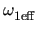 | (theparentequation.12) |
In (12.11),  is the parameter vector;
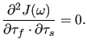 is the Augmented Lagrangian function; k is the current iteration of the Method of Multipliers;
is the parameter vector;
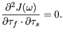 is the Augmented Lagrangian function; k is the current iteration of the Method of Multipliers;  are the Lagrange multipliers which are positive factors such that, at the minimum
are the Lagrange multipliers which are positive factors such that, at the minimum
 ,
,
 f (
f ( ) = 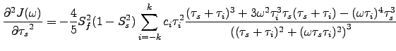
) = 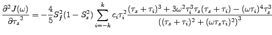 ci(
ci( ); 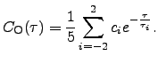 > 0 is the penalty parameter which decreases to zero as
k
); 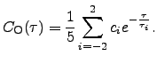 > 0 is the penalty parameter which decreases to zero as
k 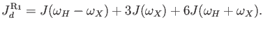;
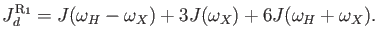;
 is the set of inequality constraints; and
ci(
is the set of inequality constraints; and
ci( ) is an individual constraint value. The Lagrange multipliers are updated using the formula
) is an individual constraint value. The Lagrange multipliers are updated using the formula
| 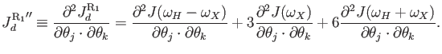 | (theparentequation.13) |
The gradient of the Augmented Lagrangian is
 |
(theparentequation.14) |
and the Hessian is
| 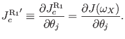 | (theparentequation.15) |
The Augmented Lagrangian algorithm can accept any set of three arbitrary constraint functions c( ),
),
 c(
c( ), and
), and
 c(
c( ). When given the current parameter values c(
). When given the current parameter values c( ) returns a vector of constraint values whereby each position corresponds to one of the model parameters. The constraint is defined as
ci 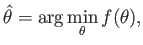 0. The function
) returns a vector of constraint values whereby each position corresponds to one of the model parameters. The constraint is defined as
ci 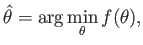 0. The function
 c(
c( ) returns the matrix of constraint gradients and
) returns the matrix of constraint gradients and
 c(
c( ) is the constraint Hessian function which should return the 3D matrix of constraint Hessians.
) is the constraint Hessian function which should return the 3D matrix of constraint Hessians.
A more specific set of constraints accepted by the Method of Multipliers are bound constraints. These are defined by the function
| (theparentequation.16) |
where l and u are the vectors of lower and upper bounds respectively and  is the parameter vector. For example for model-free model m4 to place lower and upper bounds on the order parameter and lower bounds on the correlation time and chemical exchange parameters, the vectors are
is the parameter vector. For example for model-free model m4 to place lower and upper bounds on the order parameter and lower bounds on the correlation time and chemical exchange parameters, the vectors are
 |
(theparentequation.17) |
The default setting in the program relax is to use linear constraints which are defined as
where A is an
m x n matrix where the rows are the transposed vectors ai of length n; the elements of ai are the coefficients of the model parameters;  is the vector of model parameters of dimension n; b is the vector of scalars of dimension m; m is the number of constraints; and n is the number of model parameters.
is the vector of model parameters of dimension n; b is the vector of scalars of dimension m; m is the number of constraints; and n is the number of model parameters.
In rearranging (12.18) the linear constraint function c( ) returns the vector
A .
) returns the vector
A .  - b. Because of the linearity of the constraints the gradient and Hessian are greatly simplified. The gradient
- b. Because of the linearity of the constraints the gradient and Hessian are greatly simplified. The gradient
 c(
c( ) is simply the matrix A and the Hessian
) is simply the matrix A and the Hessian
 c(
c( ) is zero.
) is zero.